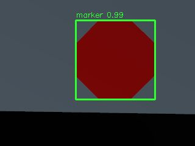
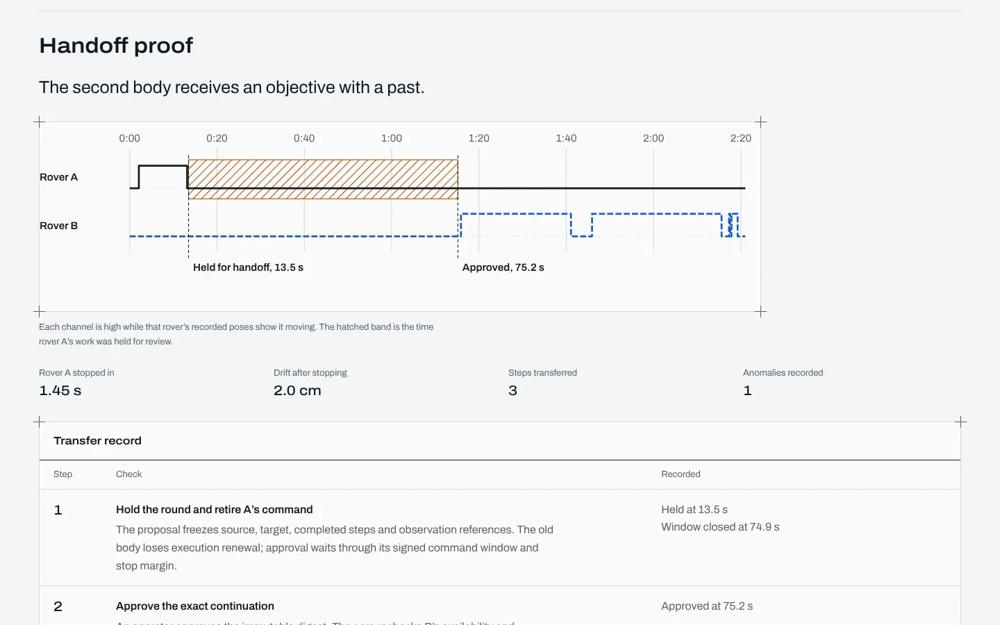
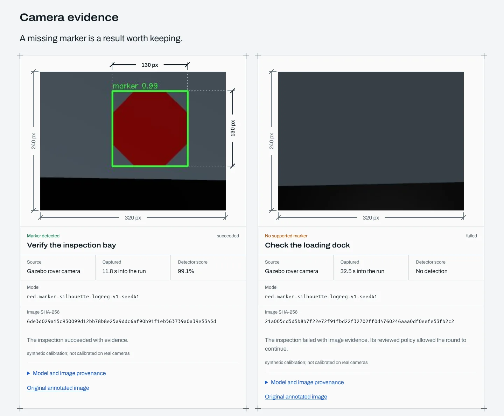
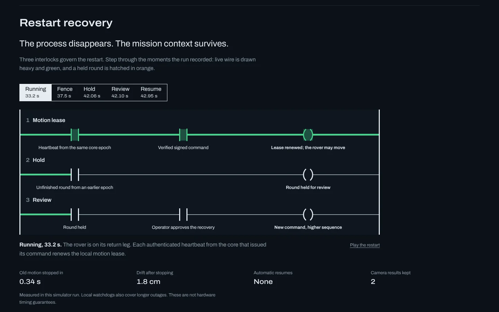
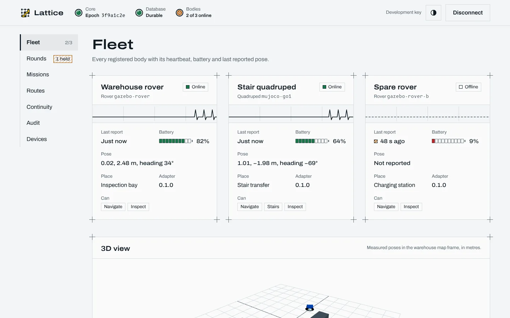
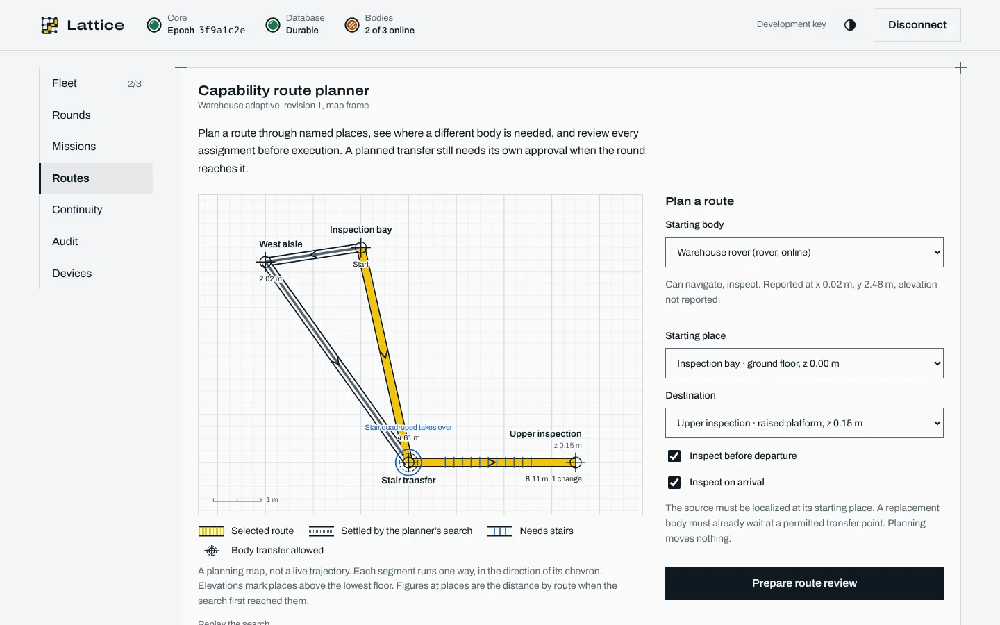
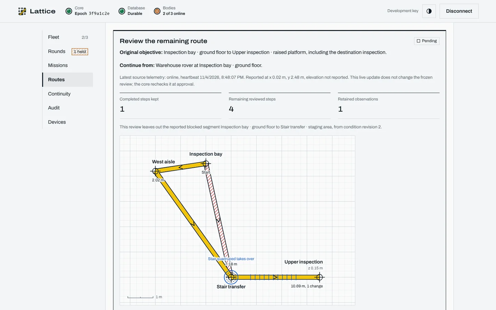
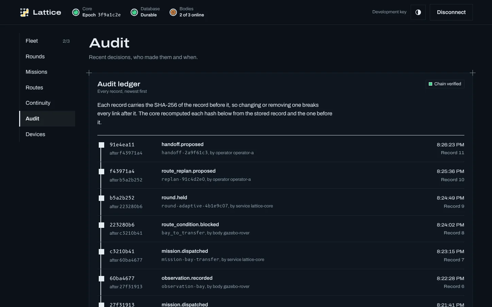

Lattice
Robot missions that keep their objective when the route or body changes
Telling a robot what to do is the easy part; keeping the goal when the plan breaks is the hard one. A rover inspects a warehouse station, then finds its route blocked. Lattice holds the objective and prepares a west-aisle detour for review, keeping the completed inspection and its camera evidence. At the stair landing, a separately approved handoff lets a Go1 quadruped verify that evidence, climb three small steps and inspect the upper station. The route and the body change; the objective and its history stay with Lattice.
I built it to connect applied machine learning with the parts of robotics that have to keep working when a model is unsure or a connection drops. A Rust core plans routes, takes approvals and signs commands; a Rust agent on each body verifies those commands, and the evidence they carry, before handing them to ROS 2 and Nav2 or to the MuJoCo gateway. Python supplies the language classifier and the marker detector, and the Go1 walks on a published locomotion policy.
- Built with
- Rust, React, TypeScript, C++20, ROS 2 Jazzy, Nav2, Gazebo, MuJoCo, Python, NumPy, scikit-learn, OpenCV, PostgreSQL, OIDC
- Scope
- A Gazebo rover and a MuJoCo Go1 in separate physics worlds that share one map. Physical hardware is future work.
- Runs on
- Netlify for the tour and the operator console; Google Cloud Run, Cloud SQL and Keycloak for the core, which scales to zero between demos
- My focus
- Evaluating the models, integrating the robots, drawing the line between a model’s suggestion and a robot’s action, and making every failure visible
Three recorded runs
-
A blocked aisle
An obstacle that isn’t on the map blocks the direct route, and the simulated lidar reports it. The core holds the round and proposes a west-aisle detour that keeps the finished inspection and its image; a stale review can’t clear a newer sensor report or restart motion.
Detour prepared in 35 ms. Held 46.8 s for approval and the old command’s expiry. No inspection repeated.
Explore the blocked aisle -
Stairs need a different body
The planner matches each segment of the route to a body that can travel it: the rover covers the ground floor, and a Go1 waiting at the stair landing takes the steps, after its own approval and after checking the rover’s image against its recorded hash.
Four steps in 37.4 s. Rover 4.32 m, Go1 3.57 m, with foot contacts on all three 5 cm risers.
Explore the rover-to-Go1 route -
A second rover finishes
Before Rover B takes over from Rover A, the core withdraws A’s permission to move and waits for its last signed command to expire. B gets the three remaining steps and A’s original image, and none of A’s work is done twice.
A stopped 1.45 s after the handoff was prepared and drifted 2.0 cm. B finished 3 steps; 0 repeated.
Explore the two-rover handoff
Each run is one recording and a bounded simulation measurement, not a claim about physical robots. Download the recordings: blocked aisle with its lidar scan, rover to Go1 and two rovers.
One round, including the interruption
A fourth run: one rover inspects two stations and drives back to charge, and the core is stopped partway through. Scrub through the 74.5 seconds it recorded, 271 measured poses over 14.21 m, including the stop, the reviewed recovery and the return.


Download this round. It’s a recording: nothing on this page connects to or controls a robot.
The product

The two-rover handoff as a logic-analyser trace; the hatched band is the time A’s work was held for review. 
Camera evidence as plates: the marker found at the bay and missing at the dock. A failed inspection is a result worth keeping. 
Restart recovery as a relay ladder: three interlocks, stepped through the moments the run recorded. 
The operator console opens on the fleet: each body’s heartbeat, battery and last reported pose. 
The route planner draws its own search: the route it chose, the one it ranked lower, and where the quadruped takes over. 
After a blockage, the review keeps the finished step and its image and needs a fresh approval. 
The audit log as a ledger: each record carries the hash of the one before it, and the core rechecks every link.
The first three screens are chapters of the tour; the console screens use sample data, except the route plans, which are the planner’s own output. On the hosted site, the console sits behind a sign-in.
- Propose
- A trained intent classifier picks the skill for a language request and explicit rules resolve the place and bound the speed; an unclear request becomes a question or a refusal.
- Approve
- The core seals the plan and its failure policy into a digest, and Postgres commits the approval, the commands and the audit record in one transaction, so an altered or expired review fails and a retry never sends a command twice.
- Navigate
- The body checks each command’s signature, target, sequence and deadline before Nav2 or the Go1’s policy moves it, and local limits and connection watchdogs stay in charge.
- Remember
- Each observation keeps its body, capture time, confidence scope and image hash, and a later image without the marker never erases an earlier sighting.
How it’s checked
| What was measured | Result |
|---|---|
| Clear language requests resolved to the right skill and place, on held-out cases | 9 of 12 |
| Ambiguous, unsupported and adversarial requests refused or sent back for clarification | 24 of 24 |
| Marker detector on 600 synthetic test crops, precision and recall at a 0.8 score | 100%, 98.3% |
| Route-planner cases covering capabilities, staging, closures and refusals | 30 of 30 |
| Simulator scenarios completed, including two barriers that each needed a reviewed detour | 3 of 3 |
| Finished inspections repeated after a detour or a handoff | 0 |
| Stop after the core was interrupted mid-drive, and drift afterward | 0.34 s, 1.76 cm |
| Accessibility of the tour and the console, axe-core against WCAG 2.1 AA, light and dark, phone and desktop | 0 violations |
The three clear requests it missed were refused or sent back for clarification, never turned into a wrong command. These small language and synthetic-image sets don’t establish adversarial robustness or accuracy on a physical camera. Read the full evaluations: language and markers, the route planner and the adaptive missions, which also records an earlier integration failure.
The marker the model couldn’t see
The synthetic tests passed, but the first live camera inspection failed: the marker’s material rendered white in Gazebo, and the detector was trained to find red markers. It returned no detection, and Lattice kept the failed outcome and the image, which exposed the rendering problem. I fixed the asset rather than lowering the model’s threshold to hide the failure; the next run found the marker, and an inspection facing away from it still failed, with its image kept.
The rest of Lattice is tested the same way: occupy the destination, cut the connection, change the approval and retry it. A model call that succeeds only becomes a mission that succeeds when the robot brings back the evidence.